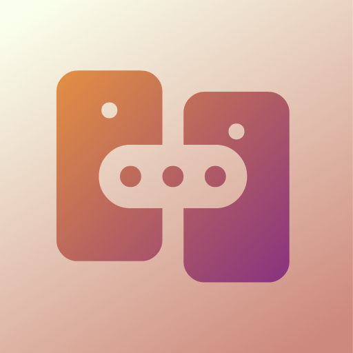
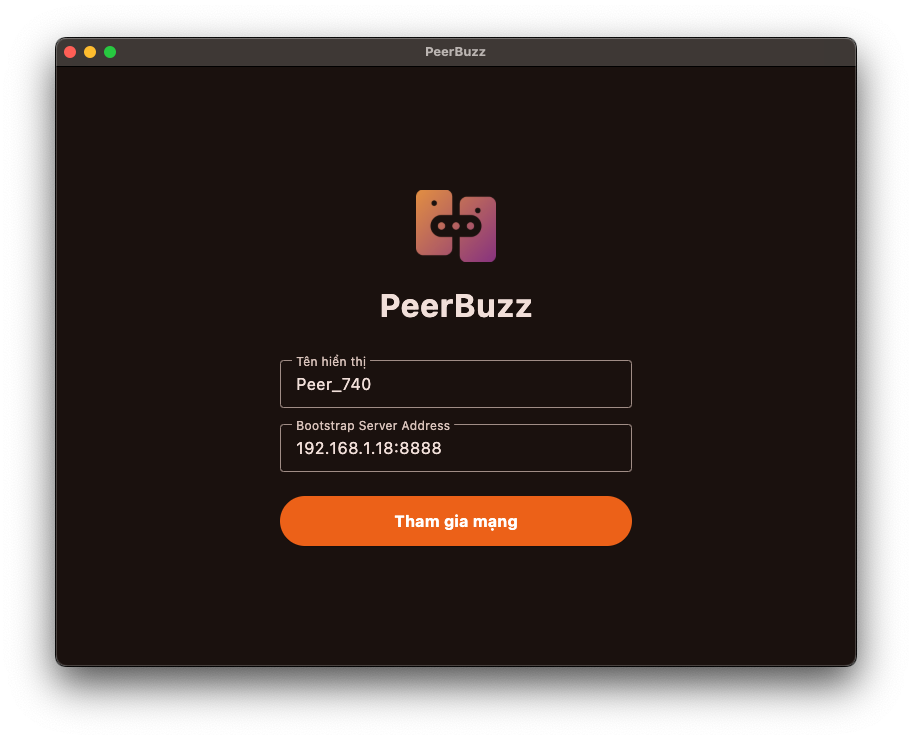

Bài tập lớn môn học: Các Hệ Thống Phân Tán (Chủ Đề 3 - P2P Chat)
Trước khi chạy hệ thống, hãy cài đặt môi trường tương ứng cho thiết bị của bạn:
Cài đặt qua Homebrew:
brew tap dart-lang/dart brew install dart
Cài đặt qua Winget hoặc Chocolatey:
winget install Dart.Dart
choco install dart-sdk
Kiểm tra phiên bản sau khi cài đặt:
dart --version
Ứng dụng khách đã được đóng gói sẵn cho các hệ điều hành, cài đặt nhanh chóng:
PeerBuzz-macos.dmg):
Mở file .dmg và kéo
biểu tượng PeerBuzz vào thư mục Applications để sử dụng.
PeerBuzz-windows.zip):
Giải nén thư mục và chạy trực
tiếp file peerbuzz.exe để khởi động ứng dụng.
PeerBuzz-android.apk):
Copy file .apk vào
điện thoại Android và tiến hành cài đặt trực tiếp.
PeerBuzz-ios.ipa):
Cài đặt thông qua TestFlight, các công cụ ký chứng chỉ bên thứ 3 hoặc cài qua Xcode.
Bootstrap Server đóng vai trò hỗ trợ Peer Discovery (quản lý danh sách online và trả về các địa chỉ IP:Port đang hoạt động).
Mở terminal và di chuyển đến thư mục chứa Bootstrap Server.
cd bootstrap_server
Cập nhật dependencies cần thiết cho Dart project.
dart pub get
Mặc định server sẽ chạy trên cổng 8888 lắng nghe tất cả các card mạng.
dart run bin/bootstrap_server.dart
Khi chạy thành công, màn hình console sẽ hiển thị:
============================================== 🚀 PeerBuzz Bootstrap Server is running 📍 Address: 0.0.0.0:8888 ⏱ Timeout policy: 60s ==============================================
Minh họa quá trình khởi chạy Bootstrap Server
Để các Client có thể kết nối tới Server, bạn cần tìm địa chỉ IP nội bộ (Local IP) của máy tính đang chạy Bootstrap Server:
Mở Terminal và gõ lệnh sau để lấy IP:
ipconfig getifaddr en0 # Hoặc xem trong Cài đặt hệ thống > Wi-Fi / Mạng
Mở Command Prompt (cmd) và gõ lệnh:
ipconfig
Tìm dòng IPv4 Address
của card mạng đang kết nối (ví dụ: 192.168.1.X).
Mở ứng dụng PeerBuzz đã cài đặt trên hệ điều hành tương ứng ở Bước 1.
Peer_740).Nhập địa chỉ máy chủ theo định dạng:
[IP_Bootstrap]:[Port]
127.0.0.1:8888.
8888 (ví dụ: 192.168.1.18:8888).

Giao diện nhập địa chỉ Bootstrap Server trên ứng dụng Peer Client
Ấn nút Tham gia mạng để bắt đầu quá trình khám phá Peer và tham gia kết nối chat.
Để kiểm chứng đầy đủ các tính năng phân tán nâng cao, hãy thực hiện kịch bản thử nghiệm sau:
storeFor.leave chủ động).gossipDown báo cáo Peer B offline cho các node láng
giềng khác để cập nhật giao diện ngay lập tức mà không cần đợi Bootstrap Server quét timeout (60 giây).